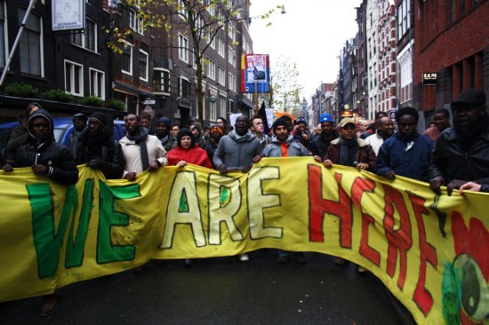
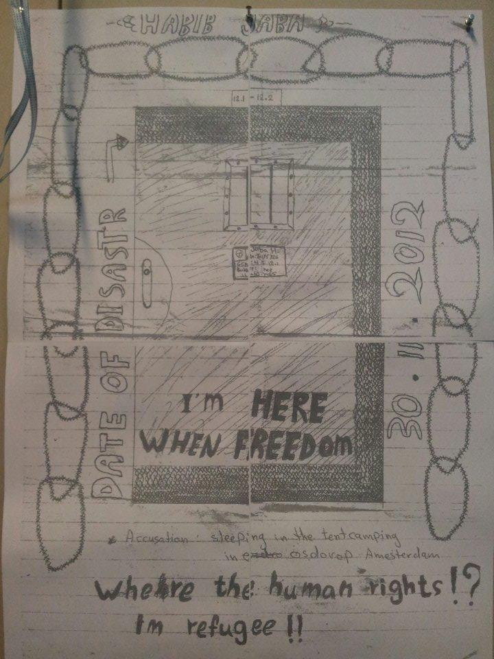

Projecten
Overig
Vluchtelingen in het nauw
Ik zit in een bar tegenover een uitgeprocedeerde asielzoeker. Hij is een van de bewoners van de Vluchtkerk, waar de groep vluchtelingen die protesteerde tegen hun rechteloosheid tijdelijk onderdak heeft gekregen. Omdat ik wat serieuze zaken met hem heb te bespreken over zijn zaak en zijn recentelijke arrestatie voor door het park fietsen en de daaruit voortvloeiende rechtszaken, besloot ik even buiten de Vluchtkerk af te spreken. Als je daar binnenkomt is het altijd hectisch. Iedereen heeft vragen, er moeten mensen plots naar een dokter, er is ruzie of juist gejoel om een doelpunt bij een voetbalwedstrijd op tv. Een bar dus, in Amsterdam, De Baarsjes.
We praten Nederlands met elkaar; hij is immers al 11 jaar in Nederland. Hij ziet er moe en hopeloos uit. 'Ik heb drie vragen gesteld de afgelopen 11 jaar,' zegt hij, 'Mag ik in Nederland blijven? Het antwoord was nee. Mag ik terug naar mijn land? Het antwoord was dat kan niet. Mag ik naar een ander land? Het antwoord was dat mag niet. Waar moet ik zijn?'
Deze kromme redeneringen kom ik steeds vaker tegen en het leidt mensen tot wanhoop. En inmiddels mijzelf ook. 'Ik ben al 11 jaar in Nederland, ik heb niks meer in het land waar ik vandaan kom. Geen familie, geen kennissen. Ik heb geen idee wat mij te wachten staat. Maar toch wil ik terug. Ik heb heel veel ellende meegemaakt in Nederland, weet je. Deze manier van leven, zonder recht op wat dan ook, kan ik niet langer aan. Ik wil terug naar mijn land.' Dus tekende hij een paar jaar geleden een papier waarin staat dat hij terug wil keren. Hij bezocht zijn ambassade in Brussel. Daar kreeg hij te horen dat hij eerst maar moest aantonen dat hij is wie hij is. Hij heeft geen idee hoe hij dat moet doen. Hij kan het zelf zeggen, maar dat is niet voldoende. Hij heeft geen familie meer die iets kan bewijzen. Hij heeft ook geen paspoort, net als 70 procent van de wereldbevolking. Sindsdien zit hij klem. En hoe graag ik ook zou willen, ik kan hem hier niet uit helpen.
Terug in de Vluchtkerk, ontmoet ik de een na de andere persoon, waarvan sommige inmiddels mijn vrienden zijn geworden. We lachen samen, maken grapjes, maar van binnen voelt iedereen de stress. Sommige mensen slaan door en zitten nu in een instelling. Anderen slaan door maar zitten nog steeds in de Vluchtkerk. Op een onbewaakt moment biecht iemand mij opeens op dat hij er wel eens over denkt om zelfmoord te plegen. Ik ben er stil van. Er zitten drie anderen om ons heen. Ze zijn ook even stil en zeggen dan alle drie: natuurlijk, dat hebben we allemaal. Het is geen leven. Maar we moeten hoop houden.
En een paar dagen later staan we samen in de Paradiso, waar drie vluchtelingen die samen met andere muziekanten de band Wij Zijn Hier hebben gevormd het dak van deze muziektempel afspelen, in het voorprogramma van een bekende Malinese zanger (Salif Keita). Alle vluchtelingen hebben gratis toegang gekregen en het is een enorm feest tot diep in de nacht.
Als ik een ding heb geleerd in de afgelopen maanden is dat er geen logica is. Geen logica in wat ik voel en wat ik meemaak, geen logica in hoe mensen zich uiten en vooral geen logica in ons systeem. Wat ook niet logisch is, is dat sommige mensen van de groep nog steeds in detentie zitten. Ik bezoek hen in verschillende detentiecentra. Habib, uit Jemen, tekende zijn situatie. Hij klaagt erover dat hij tussen de criminelen wordt gestopt, terwijl hij een vluchteling is. In een gesprek met dienst terugkeer en vertrek klaagt hij erover dat hij al is gevraagd voor drugssmokkel, voor paspoortvervalsing en het overvallen van huizen waar oude mensen wonen. Opeens is er interesse en wordt er een tolk geregeld bij het gespek: wie heeft dit gevraagd? Habib reageert schamper: 'Hoe haal je het in je hoofd dat je denkt dat ik namen ga noemen! Vertel mij eerst maar eens hoe het kan dat een land als Nederland, dat internationaal aangeeft mensen rechten zo belangrijk te vinden, mensen die gevlucht zijn opsluit tussen de criminelen.'
Mensen horen niet op straat te leven, zeker niet in een land als Nederland. Inmiddels hebben ook enkele politieke partijen dit standpunt ingenomen en is er enige hoop op een oplossing, hoewel die nog zeer ver weg lijkt. Om solidariteit te tonen met de vluchtelingen is er op zaterdag 23 maart een grote demonstratie in Amsterdam, van de Vluchtkerk, naar het Museumplein. Kom ook en zegt het voort! GEEN VLUCHTELING OP STRAAT OF IN DE CEL!
http://vluchtelingenactie2013.nl/
www.facebook.com/Vluchtelingenactie2013
https://www.facebook.com/WijZijnHier?fref=ts